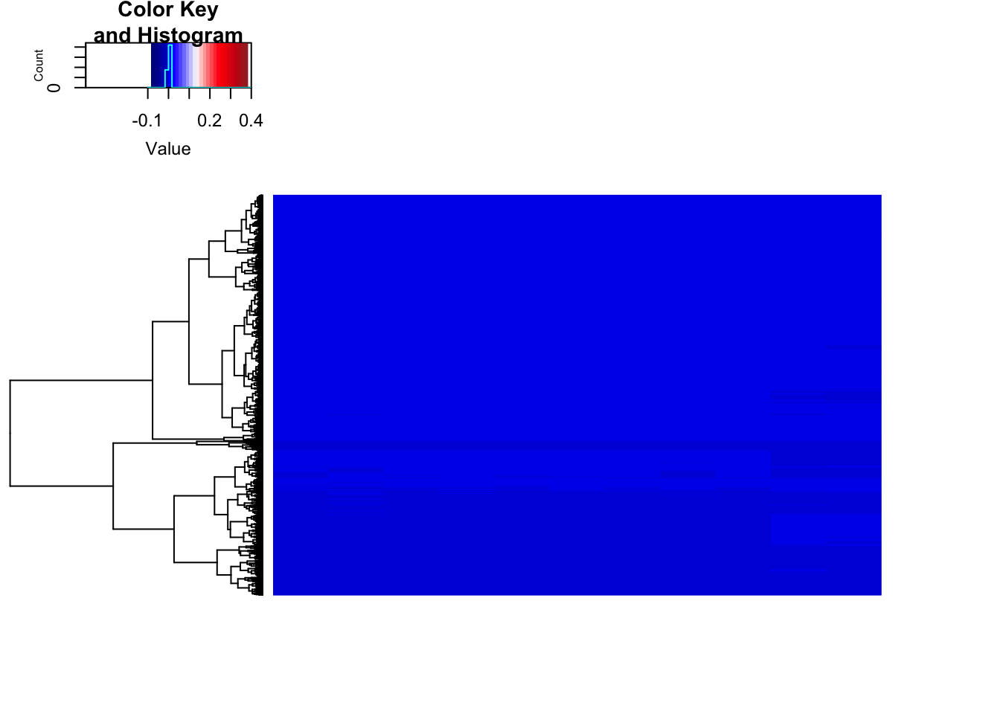
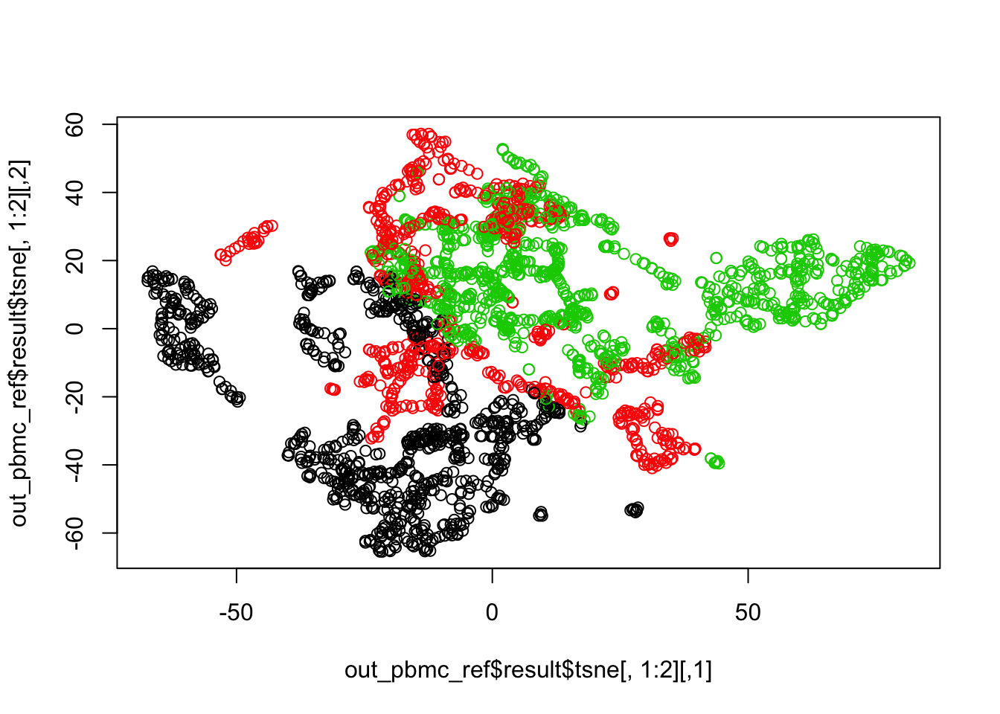
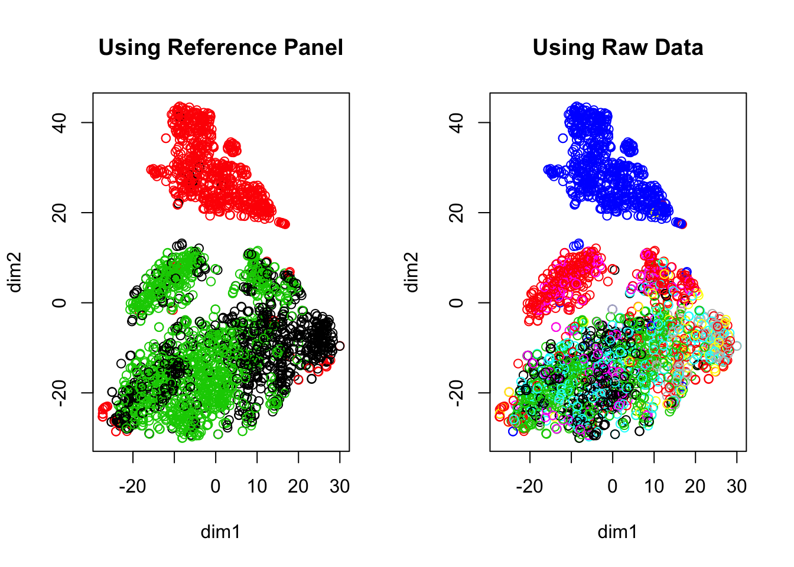
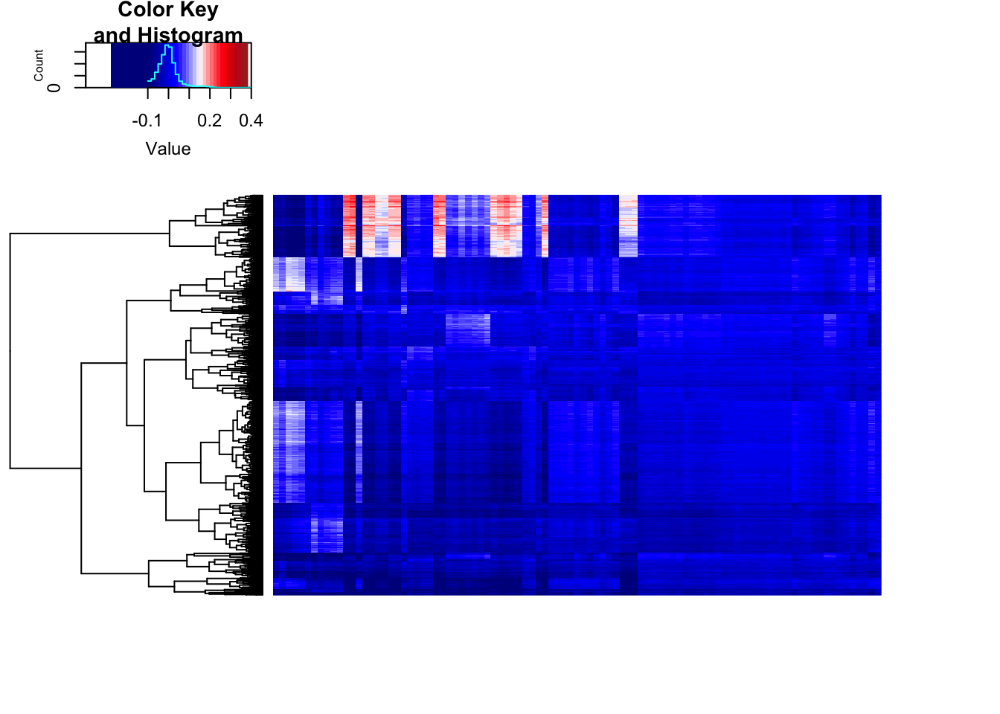
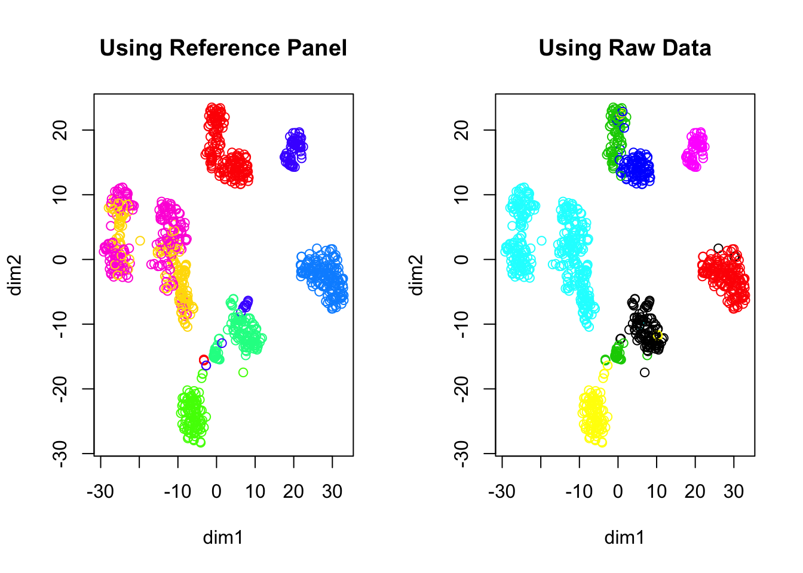

Last updated: 2018-07-26
workflowr checks: (Click a bullet for more information) ✔ R Markdown file: up-to-date
Great! Since the R Markdown file has been committed to the Git repository, you know the exact version of the code that produced these results.
✔ Environment: empty
Great job! The global environment was empty. Objects defined in the global environment can affect the analysis in your R Markdown file in unknown ways. For reproduciblity it’s best to always run the code in an empty environment.
✔ Seed:
set.seed(20180618)
The command set.seed(20180618) was run prior to running the code in the R Markdown file. Setting a seed ensures that any results that rely on randomness, e.g. subsampling or permutations, are reproducible.
✔ Session information: recorded
Great job! Recording the operating system, R version, and package versions is critical for reproducibility.
✔ Repository version: 9181fc9
wflow_publish or wflow_git_commit). workflowr only checks the R Markdown file, but you know if there are other scripts or data files that it depends on. Below is the status of the Git repository when the results were generated:
Ignored files:
Ignored: .Rhistory
Ignored: .Rproj.user/
Ignored: R/.Rhistory
Ignored: analysis/.Rhistory
Ignored: analysis/pipeline/.Rhistory
Untracked files:
Untracked: ..gif
Untracked: .DS_Store
Untracked: R/.DS_Store
Untracked: R/myheatmap.R
Untracked: analysis/.DS_Store
Untracked: analysis/cellref.pdf
Untracked: analysis/detection_rate_correction_cache/
Untracked: analysis/euclidean1SLSL_kernels_tmp.txt
Untracked: analysis/euclidean2SLSL_kernels_tmp.txt
Untracked: analysis/euclidean3SLSL_kernels_tmp.txt
Untracked: analysis/euclidean4SLSL_kernels_tmp.txt
Untracked: analysis/euclidean5SLSL_kernels_tmp.txt
Untracked: analysis/euclidean6SLSL_kernels_tmp.txt
Untracked: analysis/pbmcheat.pdf
Untracked: analysis/pbmcref.pdf
Untracked: analysis/pearson1SLSL_kernels_tmp.txt
Untracked: analysis/pearson2SLSL_kernels_tmp.txt
Untracked: analysis/pearson3SLSL_kernels_tmp.txt
Untracked: analysis/pearson4SLSL_kernels_tmp.txt
Untracked: analysis/pearson5SLSL_kernels_tmp.txt
Untracked: analysis/pearson6SLSL_kernels_tmp.txt
Untracked: analysis/pipeline/large_sets.pdf
Untracked: analysis/pipeline/temp_ari.txt
Untracked: analysis/pipeline/temp_time.txt
Untracked: analysis/spearman1SLSL_kernels_tmp.txt
Untracked: analysis/spearman2SLSL_kernels_tmp.txt
Untracked: analysis/spearman3SLSL_kernels_tmp.txt
Untracked: analysis/spearman4SLSL_kernels_tmp.txt
Untracked: analysis/spearman5SLSL_kernels_tmp.txt
Untracked: analysis/spearman6SLSL_kernels_tmp.txt
Untracked: analysis/writeup/cite.log
Untracked: analysis/writeup/paper.aux
Untracked: analysis/writeup/paper.bbl
Untracked: analysis/writeup/paper.blg
Untracked: analysis/writeup/paper.log
Untracked: analysis/writeup/paper.out
Untracked: analysis/writeup/paper.synctex.gz
Untracked: analysis/writeup/paper.tex
Untracked: analysis/writeup/writeup.aux
Untracked: analysis/writeup/writeup.bbl
Untracked: analysis/writeup/writeup.blg
Untracked: analysis/writeup/writeup.dvi
Untracked: analysis/writeup/writeup.log
Untracked: analysis/writeup/writeup.out
Untracked: analysis/writeup/writeup.synctex.gz
Untracked: analysis/writeup/writeup.tex
Untracked: analysis/writeup/writeup2.aux
Untracked: analysis/writeup/writeup2.bbl
Untracked: analysis/writeup/writeup2.blg
Untracked: analysis/writeup/writeup2.log
Untracked: analysis/writeup/writeup2.out
Untracked: analysis/writeup/writeup2.pdf
Untracked: analysis/writeup/writeup2.synctex.gz
Untracked: analysis/writeup/writeup2.tex
Untracked: analysis/writeup/writeup3.aux
Untracked: analysis/writeup/writeup3.log
Untracked: analysis/writeup/writeup3.out
Untracked: analysis/writeup/writeup3.synctex.gz
Untracked: analysis/writeup/writeup3.tex
Untracked: data/unnecessary_in_building/
Unstaged changes:
Modified: DESCRIPTION
Modified: analysis/pipeline/large_sets.Rmd
Modified: analysis/pipeline/pbmc_pipeline.R
Modified: analysis/pipeline/small_good_sets.Rmd
Modified: analysis/pipeline/small_good_sets_result.txt
Modified: analysis/pipeline/small_good_sets_time.txt
Modified: analysis/writeup/.DS_Store
Modified: data/.DS_Store
Modified: docs/figure/.DS_Store
library(SCNoisyClustering)
library(inline)
library(matrixStats)
library(quadprog)
library(irlba)
library(ggplot2)
library(dplyr)
library(reshape)
library(caret)
library(fossil)
library(pracma)
library(igraph)
library(Rtsne)
library(gplots)
library(broom)
library(abind)
library(stargazer)
library(scatterplot3d)
library(diceR)
library(parallel)
library(data.table)
heat = function(S){
ggplot(melt(S), aes(x=X1, y=X2, fill=value)) + geom_tile() +
scale_fill_gradient2() +
theme(axis.text.x = element_text(angle = 90, hjust = 1)) +
xlab("") + ylab("")
}X = readMM('../data/unnecessary_in_building/pbmc3k/matrix.mtx')
X = as.matrix(X)
genes = read.table('../data/unnecessary_in_building/pbmc3k/genes.tsv')
rownames(X) = genes$V2
ref_file = readRDS('../data/unnecessary_in_building/pbmc3k/all_pure_select_11types.rds')
ref = t(ref_file$pure_avg)
rownames(ref) = genes$V2[ref_file$pure_use_genes]
colnames(ref) = ref_file$pure_id
#ref = scale(ref, scale=FALSE)out_pbmc_ref = SLSL_ref(X = X,
ref = ref,
kernel_type = "euclidean",
correct_detection_rate = TRUE,
verbose = TRUE)[1] "data cleaning.."
[1] "computing projection.."
[1] "ref with smaller version.."
[1] "constructing kernel.."
[1] "optimizing.."
[1] "network diffusion.."
[1] "dimension reduction.."myheatmap(out_pbmc_ref$projection, 0, 3*1e-04, "")
plot(out_pbmc_ref$result$tsne[,1:2], col = out_pbmc_ref$result$result)
out_pbmc_raw = LSLSL(X=X,
klist = c(10,15,20),
sigmalist = c(1,2),
correct_detection_rate = TRUE,
verbose = TRUE)[1] "building pearson correlation matrix.."
[1] " now saving following kernels"
[1] " pearson1SLSL_kernels_tmp.txt"
[1] " pearson2SLSL_kernels_tmp.txt"
[1] " pearson3SLSL_kernels_tmp.txt"
[1] " pearson4SLSL_kernels_tmp.txt"
[1] " pearson5SLSL_kernels_tmp.txt"
[1] " pearson6SLSL_kernels_tmp.txt"
[1] "building euclidean distance matrix.."
[1] " now saving following kernels"
[1] " euclidean1SLSL_kernels_tmp.txt"
[1] " euclidean2SLSL_kernels_tmp.txt"
[1] " euclidean3SLSL_kernels_tmp.txt"
[1] " euclidean4SLSL_kernels_tmp.txt"
[1] " euclidean5SLSL_kernels_tmp.txt"
[1] " euclidean6SLSL_kernels_tmp.txt"
[1] "building euclidean distance matrix.."
[1] " now saving following kernels"
[1] " spearman1SLSL_kernels_tmp.txt"
[1] " spearman2SLSL_kernels_tmp.txt"
[1] " spearman3SLSL_kernels_tmp.txt"
[1] " spearman4SLSL_kernels_tmp.txt"
[1] " spearman5SLSL_kernels_tmp.txt"
[1] " spearman6SLSL_kernels_tmp.txt"
[1] "working on the following subsets:"
[1] "consensus clustering: CSPA.."tsne = Rtsne(t(X))
par(mfrow = c(1,2))
plot(tsne$Y,
col = out_pbmc_ref$result$result,
xlab = 'dim1',
ylab = 'dim2', main = "Using Reference Panel")
plot(tsne$Y,
col = out_pbmc_raw$result,
xlab = 'dim1', ylab = 'dim2', main = "Using Raw Data")
load('../data/unnecessary_in_building/7_Chu_celltype.RData')
sysdata = SCNoisyClustering::reference_panel
ref = reference_panel$cell
X = Chu_celltype$X
truth = as.numeric(as.factor(Chu_celltype$label))
out_cell_ref = SLSL_ref(X = as.matrix(X),
ref = as.matrix(ref),
correct_detection_rate = TRUE,
numClust = 7,
verbose = TRUE)[1] "data cleaning.."
[1] "computing projection.."
[1] "ref with smaller version.."
[1] "constructing kernel.."
[1] "optimizing.."
[1] "network diffusion.."
[1] "dimension reduction.."out_cell_raw = SLSL(X = as.matrix(X),
correct_detection_rate = TRUE,
numClust = 7,
verbose = TRUE)[1] "constructing kernel.."
[1] "optimizing.."
[1] "network diffusion.."
[1] "dimension reduction.."myheatmap(out_cell_ref$projection, -0.05, 0.35, "")
tsne = Rtsne(t(log(X+1)))
par(mfrow = c(1,2))
plot(tsne$Y,
col = rainbow(7)[out_cell_ref$result$result],
xlab = 'dim1',
ylab = 'dim2',
main = "Using Reference Panel")
plot(tsne$Y,
col = out_cell_raw$result,
xlab = 'dim1', ylab = 'dim2',
main = "Using Raw Data")
sessionInfo()R version 3.5.1 (2018-07-02)
Platform: x86_64-apple-darwin15.6.0 (64-bit)
Running under: macOS Sierra 10.12.5
Matrix products: default
BLAS: /Library/Frameworks/R.framework/Versions/3.5/Resources/lib/libRblas.0.dylib
LAPACK: /Library/Frameworks/R.framework/Versions/3.5/Resources/lib/libRlapack.dylib
locale:
[1] en_US.UTF-8/en_US.UTF-8/en_US.UTF-8/C/en_US.UTF-8/en_US.UTF-8
attached base packages:
[1] parallel stats graphics grDevices utils datasets methods
[8] base
other attached packages:
[1] data.table_1.10.4-3 diceR_0.5.1
[3] scatterplot3d_0.3-41 stargazer_5.2.2
[5] abind_1.4-5 broom_0.4.5
[7] gplots_3.0.1 Rtsne_0.13
[9] igraph_1.2.1 pracma_2.1.4
[11] fossil_0.3.7 shapefiles_0.7
[13] foreign_0.8-70 maps_3.3.0
[15] sp_1.2-7 caret_6.0-80
[17] lattice_0.20-35 reshape_0.8.7
[19] dplyr_0.7.6 ggplot2_3.0.0
[21] irlba_2.3.2 Matrix_1.2-14
[23] quadprog_1.5-5 matrixStats_0.53.1
[25] inline_0.3.15 SCNoisyClustering_0.1.0
loaded via a namespace (and not attached):
[1] nlme_3.1-137 bitops_1.0-6 lubridate_1.7.4
[4] dimRed_0.1.0 rprojroot_1.3-2 tools_3.5.1
[7] backports_1.1.2 R6_2.2.2 KernSmooth_2.23-15
[10] rpart_4.1-13 lazyeval_0.2.1 colorspace_1.3-2
[13] nnet_7.3-12 withr_2.1.2 tidyselect_0.2.4
[16] mnormt_1.5-5 compiler_3.5.1 git2r_0.21.0
[19] caTools_1.17.1 scales_0.5.0 sfsmisc_1.1-2
[22] DEoptimR_1.0-8 psych_1.8.3.3 robustbase_0.93-0
[25] stringr_1.3.0 digest_0.6.15 rmarkdown_1.9
[28] R.utils_2.6.0 pkgconfig_2.0.1 htmltools_0.3.6
[31] rlang_0.2.0 ddalpha_1.3.2 bindr_0.1.1
[34] mclust_5.4 gtools_3.5.0 ModelMetrics_1.1.0
[37] R.oo_1.22.0 magrittr_1.5 Rcpp_0.12.16
[40] munsell_0.4.3 R.methodsS3_1.7.1 stringi_1.1.7
[43] whisker_0.3-2 yaml_2.1.19 MASS_7.3-50
[46] plyr_1.8.4 recipes_0.1.2 grid_3.5.1
[49] gdata_2.18.0 splines_3.5.1 knitr_1.20
[52] pillar_1.2.2 reshape2_1.4.3 codetools_0.2-15
[55] stats4_3.5.1 CVST_0.2-1 magic_1.5-8
[58] glue_1.2.0 evaluate_0.10.1 foreach_1.4.4
[61] gtable_0.2.0 purrr_0.2.4 tidyr_0.8.0
[64] kernlab_0.9-25 assertthat_0.2.0 DRR_0.0.3
[67] gower_0.1.2 prodlim_2018.04.18 class_7.3-14
[70] survival_2.42-3 geometry_0.3-6 timeDate_3043.102
[73] RcppRoll_0.2.2 tibble_1.4.2 iterators_1.0.9
[76] workflowr_1.1.1 bindrcpp_0.2.2 lava_1.6.1
[79] ipred_0.9-6 This reproducible R Markdown analysis was created with workflowr 1.1.1